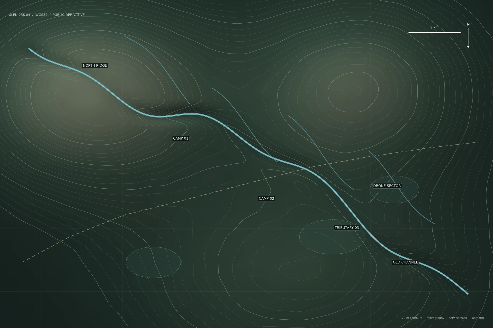

第三支流是否存在永久居民点？——2017年东岸样区人类活动调查
研究在第三支流东岸进行12天步行样线调查，未发现可确认的永久住宅、稳定农地或连续炊烟源。
方法
因雨季西岸坡面连续塌方，调查范围限定在河道东侧及两条可通行支沟。样线没有跨越第三支流主河道。
讨论
结果支持“东岸不存在稳定聚落”的判断，但不能用于排除西岸、上游旧河槽或季节性驻留点。后续媒体引用时常省略这一范围限制。

survey extent: EAST BANK ONLY · 2.401–2.433N / 114.205–114.248E